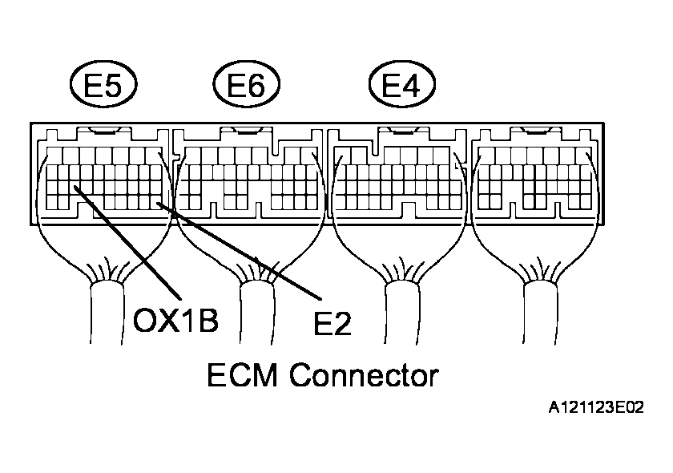
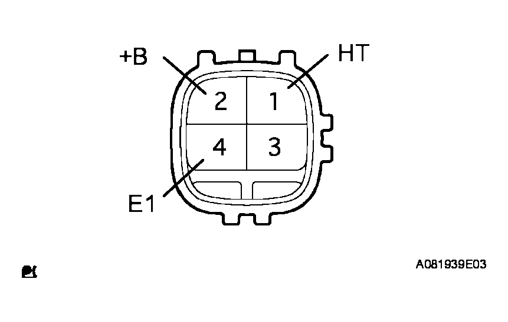

On-Vehicle Inspection
- CHECK AIR-FUEL RATIO COMPENSATION SYSTEM
HINT:
The system can also be checked by choosing "DATA MONITOR/O2 SENSOR OUTPUT VOLTAGE" on the intelligent tester monitor.
- Connect the intelligent tester to terminals E5-25 (OX1B) and E5-28 (E2) of the ECM.

Courtesy of © TOYOTA, LICENSE AGREEMENT TMS1002NOTE: Connect test leads from the backside of the connector with the ECU connected. - Warm up the heated oxygen sensor at an engine speed of 2,500 rpm for approximately 2 minutes.
- Check that the voltage varies between approximately 0 V and 1 V at an engine speed of 2,500 rpm.
OK: The voltage varies more than 8 times in 10 seconds.
NOTE:- Perform the check immediately after warming up the heated oxygen sensor.
- If the voltage variation could not be verified, warm up the heated oxygen sensor again.
- Connect the intelligent tester to terminals E5-25 (OX1B) and E5-28 (E2) of the ECM.
- INSPECT HEATED OXYGEN SENSOR
- Disconnect the sensor connector.
- Measure the resistance of the sensor.
Standard resistance
TERMINALS RESISTANCE SPECIFICATIONTester Connection Specified Condition 1 (HT) - 2 (+B) 11 to 16 Ω at 20°C (68°F) 1 (HT) - 4 (E1) 10 kΩ or higher 
Courtesy of © TOYOTA, LICENSE AGREEMENT TMS1002If the result is not as specified, replace the sensor.
- Connect the sensor connector.